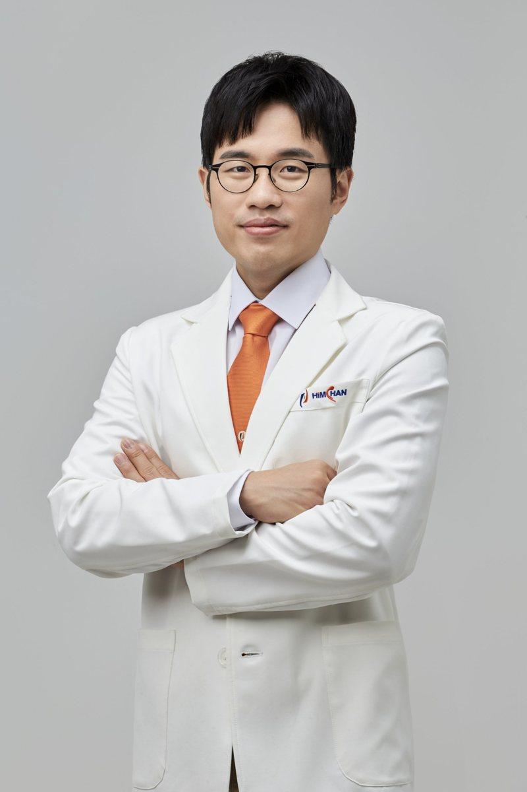
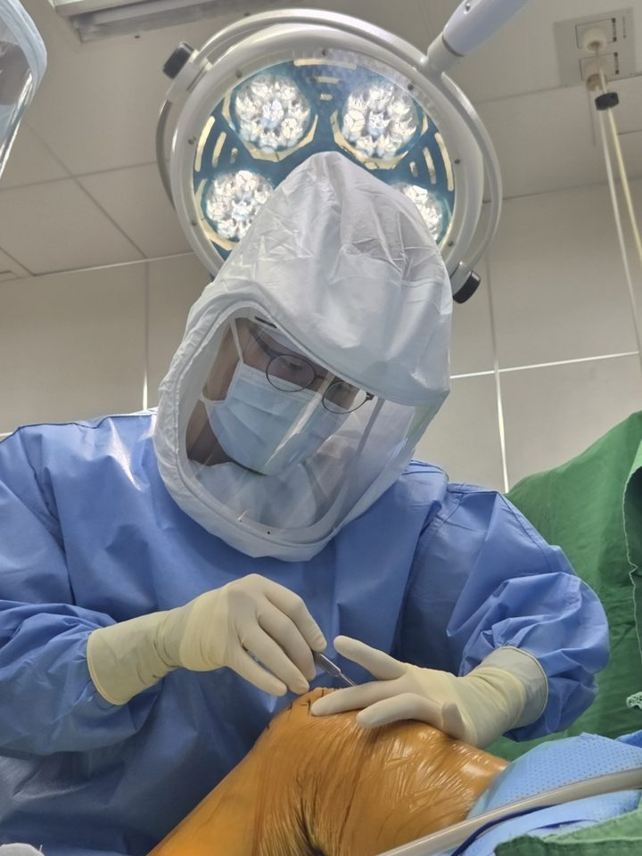

Orthopaedic Surgeon
Hee Seung Nam, Orthopedic Surgeon
Orthopedics that helps you understand the choices in surgery and treatment
I write up the questions I get most often in clinic. I explain knee, hip, shoulder, and foot and ankle conditions in terms that patients and families can follow.

I · About
About

I am Hee Seung Nam, an orthopedic surgeon. I trained in tumor surgery, knee replacement and arthroscopy, and I now see patients with knee, hip, shoulder, foot and ankle problems, fractures and sports injuries.
I believe the most helpful thing for a patient's decision is to explain, with evidence, when surgery is needed and when it is not, so I put it together in columns.
- 2007~2013
- MD, Chung-Ang University College of Medicine
- 2013~2014
- Internship, Chung-Ang University Hospital
- 2017~2022
- Orthopedic residency at the Korea Cancer Center Hospital (Korea Institute of Radiological & Medical Sciences); board-certified orthopedic surgeon
- 2022~2023
- Clinical fellow, Seoul National University Bundang Hospital (knee arthroplasty and arthroscopy)
- 2023–present
- Himchan Hospital, Orthopedic Surgery (now Incheon Himchan General Hospital)
The Surgical Record in Numbers 1,040 operations performed as the primary surgeon, 2023–2026 →
Research and Publications 23 journal articles · 6 as first author →
II · Philosophy
My approach to care
Keep the last moment of life in mind, and give your best to the work you do and the people you meet today. (Memento Mori)
I ask about your daily life first. I do not look only at imaging; together we check which movements hurt and what you want to be able to do again.
I lay the options side by side. I explain the evidence for when surgery is needed and when it is not.
Recovery is not done alone. I plan rehab together with your family and follow the recovery through to the end.
III · Practice
Areas of Practice
- KneeKnee
- Osteoarthritis, meniscus tears, ACL injuries, knee replacement3 columns · 1 education material →
- HipHip
- Hip fractures in older adults, total hip replacement, avascular necrosis5 columns · 1 education material →
- ShoulderShoulder
- Rotator cuff tears, shoulder dislocation, arthroscopic surgery3 columns →
- Foot & AnkleFoot & Ankle
- Hallux valgus, ankle fractures and pain, diabetic foot2 columns →
- Hand & ElbowHand & Elbow
- Hand numbness, wrist fractures, elbow fractures2 columns →
- Trauma & SportsFractures & Sports Injuries
- Fractures from daily life and sports, ligament and tendon injuries7 columns →
- TumorLumps & Tumors
- Lipoma, ganglion cyst, epidermoid cyst, lumps that need a biopsy2 columns →
IV · Columns
Columns
KneeFractures & Bone HealthFoot & AnkleShoulderHip & PelvisHand & WristTumorClinic Notes
- A bulging lump at the base of the thumb turned out to be a schwannoma growing from a nerveDiagnosis, surgery and recovery in two cases of hand and wrist schwannoma · 2024.10.25Tumor
- The cause of buttock pain hidden in a lumbar MRI: ankylosing spondylitisThree years of pelvic pain in a 19-year-old: sacroiliitis and HLA-B27 · 2025.10.25Hip & Pelvis
- A hip neck broken in her 50s: fixing it with an FNS instead of a joint replacementChoosing between an FNS and three screws for a femoral neck fracture: recent evidence and the operation · 2026.11.03Hip & Pelvis
- If the leg with a hip replacement breaks: periprosthetic fracture and revision surgeryA Vancouver B2 fracture in a 90-year-old, treated with a long modular stem and a grip plate · 2026.11.03Hip & Pelvis
- Still in pain after the calcium was drawn out with an injection? Calcific tendinitis and arthroscopic calcium removalWhich treatments to try first, and when arthroscopic surgery is needed · 2026.11.01Shoulder
- A lump you can feel: lipoma or sarcoma?Four signs that single out a lump worth worrying about, and the order of tests · 2026.10.31Tumor
More articles are on my Naver blog Autophagy | The Running Doctor (in Korean).
V · Education
Patient education materials
Guidance materials I give in clinic, such as care before and after surgery and rehab exercises. Anyone can view them without registering.
- After hip replacement: discharge and outpatient guideStitches and showers, positions to prevent dislocation for 3 months, walking rehab and driving · 2026.11.02Rehab · Hip
- Rehab after ACL reconstruction and meniscus repairWeek-by-week brace angles, weight bearing, crutch schedule and exercises by stage · 2026.11.01Rehab · Knee
VI · Press
Press & Writing
- What is osteoarthritis?Monthly
December issue feature, to be published December 2026 - The first signal your bones send, 'osteopenia'… do strength exercise and check bone densityBridge Economy [Expert Column], 2026.10.13
VII · Contact
Contact
Email doctornhs@naver.com
My background and research can be found on my official homepage (in Korean).
I cannot give individual diagnosis or prescriptions by email. If you have symptoms, please see a nearby medical facility.